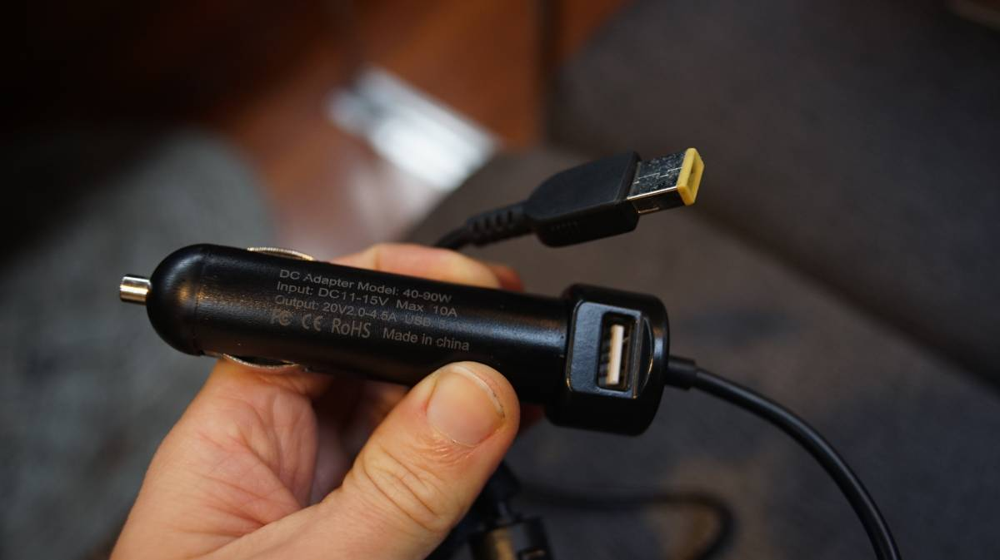
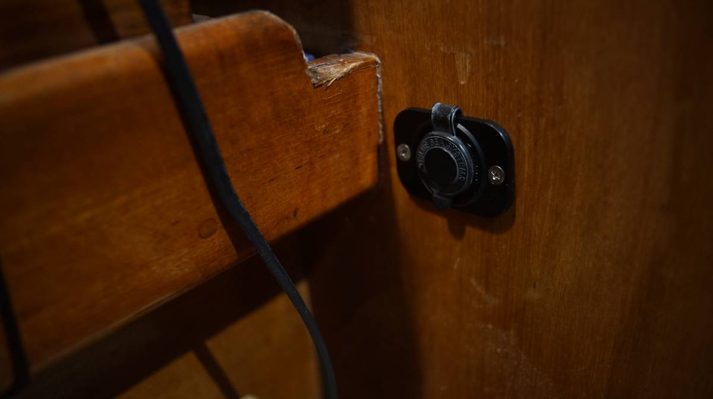
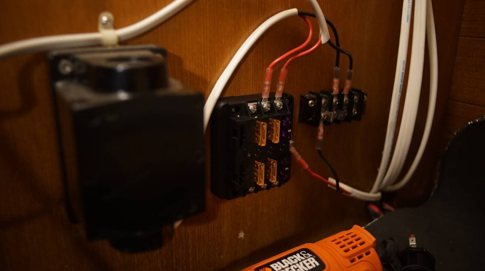

charging electronics

2023.04.16
Victoria, BC, Canada.
Click below dates for more recent updates:
From 2016 to 2023, when at anchor we'd charge smaller electronics with USB ports, and larger ones(laptops) through a small 500W inverter connected to the batteries. This is simple, and fine, but an inverter is an extra layer that we hoped to one day do away with. Today's that day!
USB-C
In 2019 someone donated a Pinebook for us to use. It is a fragile and rather cheap machine, but it doesn't use up a ton of power, and it is possible to charge it via USB-C.
Car charger outlet
Then, in 2021, a friend moved out of his boat and into a van and gave us his old Macbook Air 2013. The Macbook Air cannot be charged via USB-C, but it can be paired with a 12V DC car charger.
Car chargers have been around for a long time, from back when people used them to light cigarettes. The use of cigarette lighter receptacles to supply 12 volt DC power is a good example of backward compatibility to a de facto standard.

We bought a Blue Sea car charger outlet, and then started looking for a car charger adapter. These things are very rare(most post 2014 low-power laptops charge via USB-C now).
We found a 45W adapter for sale on ebay for 40$CAD(it even has a slot for USB). It will convert the battery voltage to the proper input voltage for the laptop directly (DC-DC).

Adapter specifications:
- Output: 14.84V 3.05A
- USB Port: 5.0V 2.1A
The sockets apply battery voltage to the center contact and ground to the cylinder. 12V devices can be powered by a plug that makes electrical contact with those two points(12V power plugs typically have spring-loaded contacts). Because the contact isn't fixed, it can lose it from time to time, and it is why people nowadays prefer to use inverters or USB-C.
While aware of the shortcomings of this type of outlet, we are going to give it a try. It is the only way to charge an older laptop without using an inverter.

Installation
Installing a USB port or a car charger outlet is the same, and it is fairly straightforward. The hardest part is choosing where to make a hole in the wall, a choice that is never easy to make because we'd all prefer our walls to remain unharmed. Using a drill and a hole saw matching the size of the outlet (28.58 mm (1 1⁄8 in) diameter hole), we do the deed and drill out a hunk of flesh(wood).
If installing a charging port outside, it is necessary to apply some sealant around the rim of the outlet to keep wetness out. Be aware that they will likely corrode overtime... such is the nature of electronics at sea. Keeping ports inside is a safer option.
USB and car charger outlets stick out quite a bit from the back, so depending on where you plan to put it, it is best to make sure that it can be protected. We repurposed an old 120V outlet cover for this purpose. The only issue with re-using this type of box is that they often rely on the outlet to be fixed onto a wall, they have 4 holes on the inside and none on the outside. We drilled holes in the box from the top so that we could insert long bolts to secure it to the inside of the wall. Depending on the box type, this may be difficult (ours was very thick-walled).

From the outlets, pos and neg wires lead back onto a gang terminal, which in turn, leads back to the breaker panel. We wired both accessories (usb and car charger) on the same 15A breaker.

Because both outlets will draw a max of ~7.16 Amps (if all ports are in use, including the USB port on the car charger outlet) at a distance of 1.20m(4 ft), we used 2 conduit 16 AWG tinned wiring. We'll likely never charge a laptop at the same time as a USB device on the car charger port, and so the draw will only ever be as high as 5.16 Amps. See how to size wiring for a project.
To connect the wiring to the back of the socket, we used 2 quick-connect female spade terminals. Because we didn't have any heat-shrink spade terminals on hand, we crimped on two regular spade terminals and covered them with a heat shrink sleeve as near to the edge as possible.
Circuit protection

All circuits ought to be fused or on a breaker. The issue is that it's not possible to buy circuit breakers that are less than 5 amps, which is too high to rightly protect sensitive electronics. The USB port and the car charger share a 15A breaker switch, and so it is sometimes necessary to add a smaller fuse in the wiring... or to set up a fuse block. (Our older breaker panel used glass fuses and was more versatile in that way).
We installed ATC fuses(and holders) on each positive wire. The USB outlet now has a 3 Amp ATC fuse, and the car charger outlet has a 5 Amp fuse. ATC fuses are fairly cheap to buy, but keep in mind that some of them have LEDs in them that indicate whether or not the fuse is blown, and these are a bit more expensive... but look the same to the untrained eye.
The table below shows all the different types of fuses that exist and for what amperage.

We can't recommend the use of in-line fuse holders, if you can, take the time to set up a fuse block, see this post.
As always, we learn about this stuff too late, but we can at least warn whoever does read this. Below is an image of an ATC fuse holder. For this type of holder, there aren't two halves like some in-line fuse holders(esp. those for glass fuses), and the seal is quite good... but changing the fuse won't be as easy. Fuse holders that come in two parts typically don't always have a good moisture seal.

The fuse boxes were connected using butt connectors. The fuse box wiring was also 16AWG, but depending on the fuse box wiring(may be thicker than 16 AWG), you may want to use a butt connector that accepts a different wire size on each end. We usually don't bother doing this because we don't like to carry a variety of connectors, and so we fold back the wire onto itself to get the desired thickness.
In-line fuses are far from ideal, because if they're hidden it can be difficult to replace them when/if they do blow. The holders are often not very good quality, and can introduce moisture into the circuit(esp those that ship with most electronics).
In all, it would be better to not have to add fuse protection in the line and to have a breaker with the right amperage.
Devine's Pinebook started having some issues, and we had to put it aside. The Pinebook had been operating fine until this point, charged via USB-C.
We may be able to fix it, but for now we had to write the inverter back in so Devine could use the Thinkpad (we don't have a non-AC way of charging it at the moment). We saw there were car chargers available for it on ebay, we may get one this fall for next summer. By-passing the noisy inverter would be nice.
The Pinebook has not recovered from last summer's ordeal, and so we decided to get a DC adapter(car charger) for the x250Thinkpad(again, to avoid having to use the inverter).
This meant having to install yet another car charger outlet. Our plan was for Devine to use the outlet that was already installed, and to install another one to the left of Rek's working area in the saloon.
We chose to put the outlet on the wall separating the head from the saloon, near Pino's woodstove. The other outlet was installed in a way that wasn't ideal for Rek's laptop, the wire had to curve over the top of the machine to reach the outlet and everytime Rek wanted to get up, the laptop cable had to be unplugged. The new outlet was installed on the same side as the charging port of the laptop(in a straight line), Rek won't have to unplug it to leave the port side settee.
As mentioned in an earlier post we don't like having to install inline fuses, so we got a fuse box. Now the positives wires of the USB outlet and of the two DC car charger outlets are consolidated on a fuse box, with a single wire leading back to the main breaker panel, and the negatives of the 3 outlets meet on a terminal block with a single neg wire leading back to the main breaker panel.
Now there are 3 red pos wires coming onto the fuse box (with 3 extra slots for other connections, the fuse boxes available at the store at a minimum of 6 slots), and 3 neg wires coming onto the terminal block.
Note. In the photo below, the third outlet had not yet been installed, the fuse box also has a clear cover(also not pictured).
